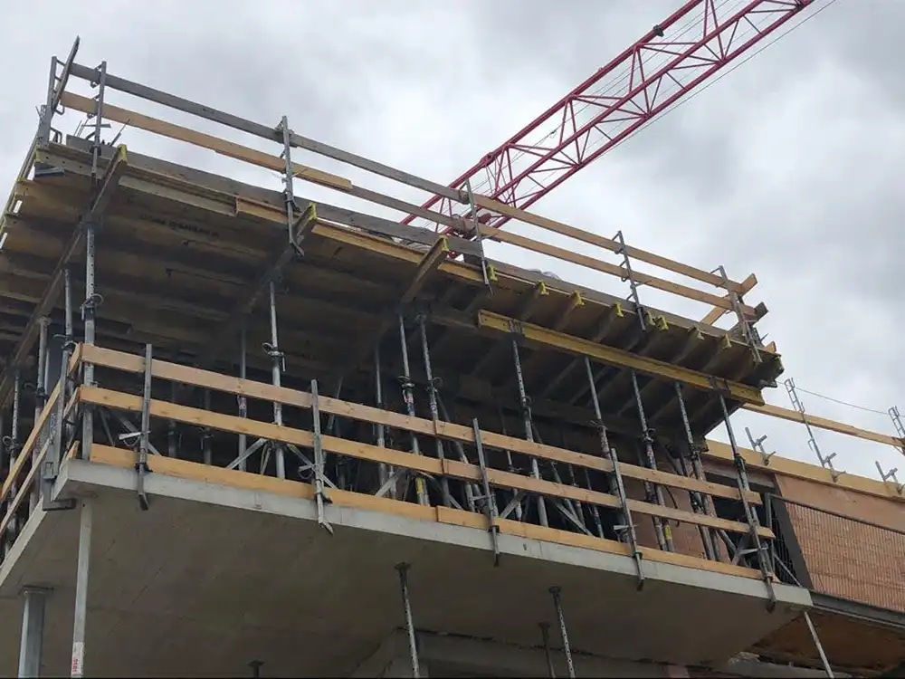

Baustellenkoordination im Rohbau
Beim Rohbau waren wir für die Baustellenkoordination zuständig. Arbeiten Gewerke auf mehreren Geschossen gleichzeitig, stimmen wir mit den Firmen ab, welche Arbeitsbereiche während der Arbeiten darüber freizuhalten sind.
Mehr über Baukoordination